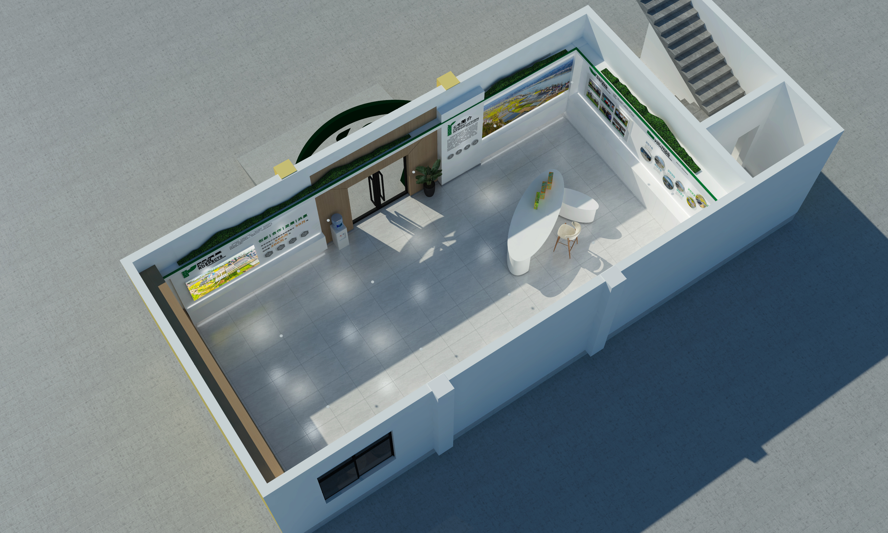
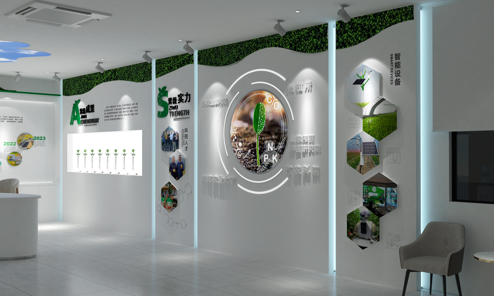

项目案例 / CASE STUDY · 15
紫薇农业展厅
ZIWEI AGRICULTURAL EXHIBITION HALL

职责定位 / PROJECT ROLE
以「科技农业 · 绿色发展」为内核的农业物联网展厅，<br>通过展示、交互与空间叙事，呈现现代农业的数字化图景。
An agricultural IoT exhibition hall built on technology & green growth — display, interaction and spatial narrative.
职责定位 / ROLE
统筹 / 空间设计
PROJECT LEAD · SPATIAL DESIGN
工作范围 / SCOPE
展厅空间设计 · 展陈设计 · 现场落地
Exhibition spatial design · Display design · Site delivery
02 / 空间呈现
展厅整体 / EXHIBITION OVERVIEW
以白与绿为主调，将农业科技的现代感转化为可逛、可读、可感知的展厅空间。

03 / 空间节点
空间节点 / SPATIAL NODES
从入口动线到展陈布局，多角度呈现展厅的空间组织与参观节奏。


04 / 空间视角
空间视角 / SPACE VIEWS
展板、大屏与实景展位结合，兼顾信息传达与现场体验。


05 / 落地呈现
落地呈现 / ON-SITE DELIVERY
项目已建成，现场标识与门头完整落地。

项目总结 / PROJECT SUMMARY
让农业科技的每一次进步，都能在空间中被看见。
Making agricultural progress visible — one space at a time.